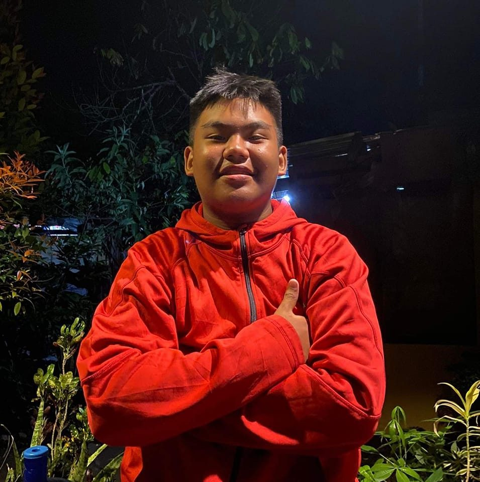
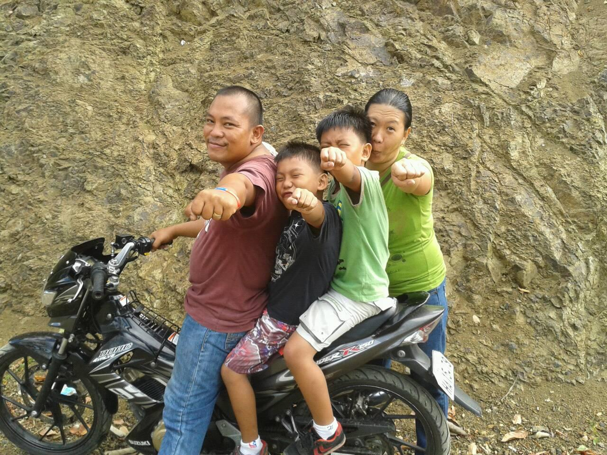

Hi, I'm Francisco M. Oczon III, a Grade 10 Student!
Hello! My name is Francisco M. Oczon III, and I am currently a 10th grade student at The College of Maasin. I have a strong passion for learning, especially in subjects like science, and computer programming. Outside of school, I enjoy playing video games, and hanging out with my friends. My future goals include attending a university and pursuing a career in Programming.
Here are some of my favorite hobbies and interests:
I come from a close-knit family. I have one brother, Stephen, and I am the youngest. My father, who sadly passed away, was a great role model, and my mother has been a constant source of support and encouragement. We enjoy spending time together, whether it's having family dinners or watching movies. Despite the challenges, my family has always been there for me, and I'm grateful for their love and support.
